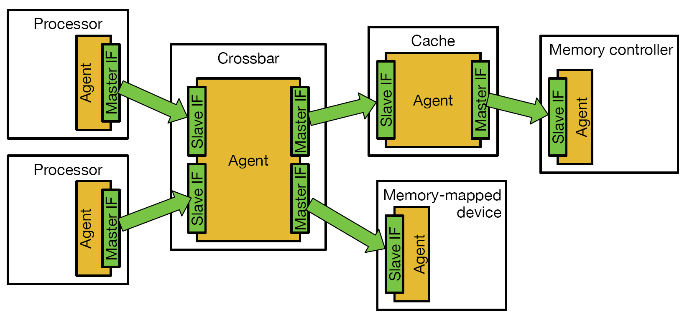
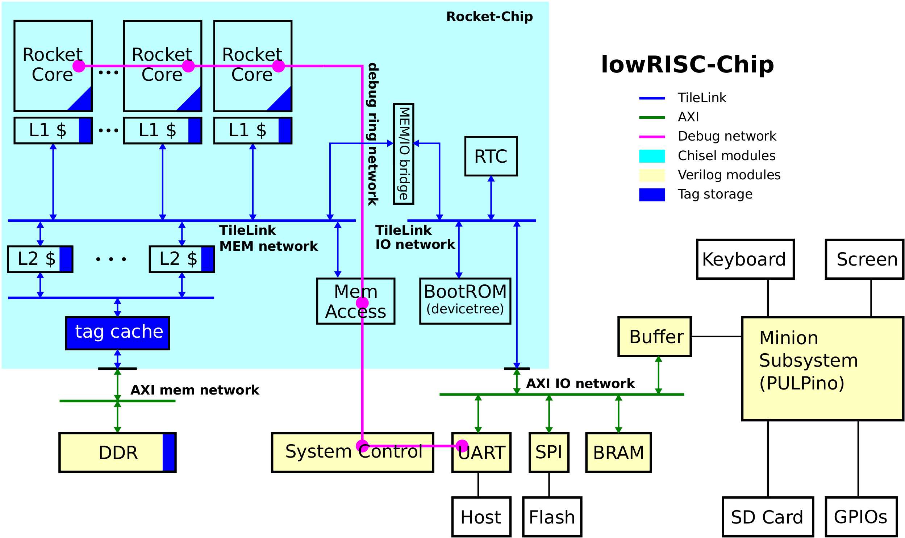

Diplomacy and TileLink from the Rocket Chip
Wei Song
(01-2018)
1. Introduction
Rocket-Chip is a SoC generator [1] initially developed by UC Berkeley and now mostly maintained by SiFive. The SoC can be configured with a single or multiple processor cores, such as the in-order Rocket cores or the out-of-order BOOM cores. The architecture of the whole SoC, including the type/size/level of caches, the number of on-chip buses and the devices hanging on individual buses, are all configurable at design time. Considering each different configuration (parameter) combination as a different SoC that requires individual settings, maintaining the flexibility and correctness of the SoC generator is a tough job. The traditional way of using design time parameters and macros to choose manually implemented hardware components at compile time clearly would not fit the purpose. For this reason, the developing team of Rocket-Chip come out with a new Scala-run-time parameter negotiation and generation mechanism called Diplomacy, which is implemented and encapsulated into a Chisel package heavily leveraging the software engineering features provided by Chisel (Scala), including functional programming, generic type inference and object oriented programming. Taking the full benefits of this Diplomacy package, the in-house TileLink bus protocol has been totally overhauled and renovated. The new TileLink protocol supports automatic parameter negotiation and checking, bus generation and interrupt connection at Scala-run-time.
As for lowRISC, we use the Rocket-Chip as the internal SoC architecture while extends it with a top level AXI interconnects implemented using SystemVerilog (SV) rather than Chisel. This allows further system extension for engineers and companies who would prefer SystemVerilog. However, the devices added to the extended AXI buses should be coherently controlled by the Rocket-Chip with no difference with the Chisel devices hanging on the internal TileLink or Chisel AXI buses. To be specific, this means the individual address spaces of the external SV devices are observable and verifiable inside the L1 data cache; therefore, an illegal access to a wrong address towards the external AXI bus can be stopped immediately inside the L1 data cache with a precise exception. Also, the interrupts of the external SV devices should be automatically connected to the internal interrupt interconnects. These would provide similar correctness insurance with the Chisel devices but do need special extension towards the Diplomacy package.
This short document is written with three purposes in mind:
- Provide the information needed to understand the Diplomacy and the TileLink.
- Provide extra information about how to extend the Rocket-Chip using the existing infrastructure, namely the cake pattern.
- Provide the internal information of the extension done by lowRISC to support the external SV AXI buses.
2. Background Information
It is probably unfeasible to write a single piece of document describing all related information. There are some good sources which serve as foreknowledge before any endeavour to read this document.
- Short users guide to Chisel: https://github.com/freechipsproject/chisel3/wiki/Short-Users-Guide-to-Chisel
This guide provides the basic features available from the Chisel3 DSL language which is developed upon the Scala language. - TileLink Spec 1.7-draft [2]: https://www.sifive.com/documentation/tilelink/tilelink-spec/
This specification provides a detailed description of the TileLink protocol and bus hardware structure. - Diplomatic design patterns: A TileLink case study [3]: https://carrv.github.io/papers/cook-diplomacy-carrv2017.pdf
This CARRV 2017 paper provides a high-level description of why and how the Diplomacy and TileLink packages are developed. - U54-MC Core Complex Manual: https://www.sifive.com/documentation/risc-v-core/u54-mc-risc-v-core-ip-manual/
U54-MC coreplex shows nearly all what the Rocket-Chip can provide at the point when this document is written. - Structure of the lowRISC SoC: http://www.lowrisc.org/docs/minion-v0.4/
The tutorial of the latest release from lowRISC. The difference between lowRISC and Rocket-Chip leads to the extension to the Diplomacy package. - Notes for Rocket-Chip: https://github.com/cnrv/rocket-chip-read
An unfinished but detailed note on the source code of the Rocket-Chip implementation.
3. Extra Information About the Diplomacy Package
Assuming you have read [2], [3], here is a quote from [3] which summarises Diplomacy pretty well:
Diplomacy is a framework for negotiating the parameterization of protocol implementations. Given a description of sets of interconnected master and slave devices, and a bus protocol template, Diplomacy cross-checks the requirements of all connected devices, negotiates free parameters, and supplies final parameter bindings to adapters and endpoints for use in their own hardware generation processes. Beyond confirming the mutual compatibility of the system endpoints, Diplomacy enables them to specialize themselves based on knowledge about the capabilities of other endpoints included in a particular system.
3.1 Diplomacy supports directed acyclic graphs
Now let us dive into some details. Figure 1 is a simple TileLink interconnect depicted as Figure 2.2 in [2]. Every hardware component (the white outer block) connected to the TileLink interconnect contains one or more TileLink agents. Each agent has at least one slave or master interface which is directly connected to the TileLink. Each pair of interfaces is connected by a single link which contains 3 or 5 different uni-directional channels depending on the level of TileLink traffic support by the interfaces.

Figure 1. A simple TileLink interconnect.
An important observation of the TileLink interconnect (or any interconnect that can be generated using Diplomacy) is that: if every agent is considered a node and every link is considered a directed arc pointing from the master interface towards the slave interface, the interconnect is a directed acyclic graph (DAG).
There are several notes here:
The mapping between agents and hardware components is not one-to-one! A hardware component may not be associated to any agent if it is not directly connected to an interconnect. A hardware component may have more than one agents if it is connected to more than one interconnects. Considering a DMA component, it may have one agent controlling its connection to the high-speed data bus while also has another agent controlling its connection to the configuration bus.
The mapping between links and actual hardware links is not always one-to-one either! The DAG is built at Scala-run-time to negotiate the parameters of various agents. Although it is normally true that an agent represents a real communication agent in hardware, it is not necessary that the Diplomacy must produce the actual hardware connections for these agents. The DAG and the Diplomacy package can be hijacked to negotiating the parameters for a virtual network while the actually hardware connections are settled separately. This is how the Diplomacy package is extended for the shared SV AXI bus in lowRISC.
3.2 A rough description of the implementation of a Node
In the Chisel implementation of the Diplomacy package, an agent is an object derived from a class named a Node. Here shows the inheritance relationship of all agents in Figure 1. All agents supported by the current Diplomacy package are derived from the same base class, MixedNode, which is defined in the Diplomacy package: Nodes.scala
# Processor
TLOutputNode < OutputNode < IdentityNode < AdapterNode < MixedAdapterNode < MixedNode
# Cache
TLAdapterNode < AdapterNode < MixedAdapterNode < MixedNode
# Crossbar
TLNexusNode < NexusNode < MixedNexusNode < MixedNode
# memory-mapped device / memory controller
AXI4SlaveNode < SinkNode < MixedNode
Now let us have a look of the internals of this MixedNode class:
// a simplified version of the MixedNode class
sealed abstract class MixedNode[DI, UI, EI, BI <: Data, DO, UO, EO, BO <: Data](
inner: InwardNodeImp [DI, UI, EI, BI],
outer: OutwardNodeImp[DO, UO, EO, BO])
{
def resolveStar(iKnown: Int, oKnown: Int, iStar: Int, oStar: Int): (Int, Int)
def mapParamsD(n: Int, p: Seq[DI]): Seq[DO]
def mapParamsU(n: Int, p: Seq[UO]): Seq[UI]
lazy val (oPortMapping, iPortMapping, oStar, iStar)
// may resolve from {downward node}.iStar and {upward node}.oStar
// call resolveStar()
lazy val oPorts // may resolve from {downward node}.iPortMapping()
lazy val iPorts // may resolve from {upward node}.oPortMapping()
lazy val oParams: Seq[DO] // resolve from oPorts, iPorts and mapParamsD()
lazy val iParams: Seq[UI] // resolve from iPorts, oPorts and mapParamsU()
lazy val edgesOut: Seq[EO] // resolve from oPorts and oParams
lazy val edgesIn: Seq[EI] // resolve from iPorts and iParams
lazy val bundleOut: Seq[BO] = edgesOut.map(e => Wire(outer.bundleO(e)))
lazy val bundleIn: Seq[BI] = edgesIn .map(e => Wire(inner.bundleI(e)))
def := (h: OutwardNodeHandle[DI, UI, BI])
def :*= (h: OutwardNodeHandle[DI, UI, BI])
def :=* (h: OutwardNodeHandle[DI, UI, BI])
}
MixedNode is an abstract set of derived variables and methods that are shared by all agents.
All agents derived from MixedNode are abstract in a sense that
an agent object stores only the derived attributes of a node which are lazily resolved from the raw parameters
provided by the type parameter: DI, UI, EI, BI, DO, UO, EO and BO.
All letters in these type parameters have specific meanings:
DandU: Every interface is described by a pair ofDandUparameters. TheDparameter describes the downwards (master to slave) behaviour of an interface while the upwards (slave to master) behaviour is described by theUparameter.E: This parameter describes the behaviour of a link or an edge in the DAG. To be specific, it might provide the utility functions to generating a certain response from a request. It is used to enforce the protocol specified by a bus standard.B: The field and width parameters of a link are defined by thisB(bundle) parameter.IandO:Idenotes that the set of parameters are for an inwards slave interface whileOis for an outwards master interface.
According to the above definitions, the class parameter (inner, outer)
provides a concrete implementation of a certain bus standard (such as AXI) for a slave interface (InwardNodeImp)
and a master interface (OutwardNodeImp).
The connection between two Diplomacy nodes is declared by the three abstract operators: :=, :*= and :=*,
which specifies an arc from the master interface of one agent (right-hand side)
to the slave interface of another agent (left-hand side).
For an example, the TileLink interconnect shown in Figure 1 can be coded like:
val processorA = new TLOutputNode(/* parameters ... */)
val processorB = new TLOutputNode(/* parameters ... */)
val crossbar = new TLNexusNode(/* parameters ... */)
val cache = new TLAdapterNode(/* parameters ... */)
val mmDevice = new AXI4SlaveNode(/*parameters ... */)
val memCtl = new AXI4SlaveNode(/*parameters ... */)
crossbar := processorA
crossbar := processorB
cache := crossbar
mmDevice := crossbar // require an adaptor node in practice
memCtl := cache // require an adaptor node in practice
Note that crossbar has been on the left-hand side twice because it has two inwards connections
while it has been on the right-hand side twice as well because it has two outwards connections as well.
The other two operators are special. Now considering the following case:
val processorA = new TLOutputNode
val processorB = new TLOutputNode
val processorC = new TLOutputNode
val crossbarI = new TLNexusNode
val cache = new TLAdapterNode
val crossbarO = new TLNexusNode
val memCtlA = new AXI4SlaveNode
val memCtlB = new AXI4SlaveNode
crossbarI := processorA
crossbarI := processorB
crossbarI := processorC
cache :=* crossbarI
crossbarO :*= cache
memCtlA := crossbarO
memCtlB := crossbarO
The input crossbar crossbarI has three inwards connections with the three processors.
However, there is only one connection with the cache that is set up by :=*.
Similarly, the output crossbar has two outwards connections but only one inwards connection with cache set up by :*=.
In other words, :=* means the number of connections is defined by the outwards side while :*= means the number of connections is defined by the inwards side. Both of them in the above example describe multi-connections.
The cache has three slave (inwards) interfaces and two master (outwards) interfaces.
Inside the class body, several abstract methods (such as the aforementioned operator :=) and ‘lazy’ variables are defined.
As a feature of Scala, a lazy variable is evaluated only when it is used.
The Diplomacy package relies on this mechanism to enforce the order of the Scala-run-time parameter negotiation.
To further highlight such order, the dependency of the listed lazy variables are commented respectively.
The Scala-run-time parameter negotiation is usually triggered by utilising the bundleOut and the bundleIn lazy variable
to declare the IO bundle of a Chisel module (we will come back to this later in the cake pattern).
Take the bundleOut as an example, it is evaluated by converting an array of edgesOut (edge parameter EO) to an array of IO bundles (BO).
The edge parameter edgesOut is also a lazy variable evaluated from the array of output connections oPorts and the parameter array of the output connections oParams.
As mentioned in the connection declaration operator := at its friends, the final number of connections of an agent is unknown if it has the special connections declared by :*= and :=*.
In this case, this agent can only resolve its port connection after its special neighbour is fully resolved.
In fact, the Diplomacy parameter negotiation process using the lazy variable to push downwards parameters from input agents (who do not have inwards connections in the DAG) to output agents (who do not have outwards connections in the DAG) and push upwards parameters from output agents to input agents.
This parameter pushing process is accomplished by the resolving of the tuple of lazy variables (oPortMapping, iPortMapping, oStar, iStar).
To be specific, the lazy value resolving process may directly call the value of iStar and oStar in its neighbour nodes, triggering their lazy variable evaluation.
When this tuple is fully resolved, indicating the parameter pushing and negotiation is finalised, the port connections oPorts and corresponding parameters oParams are resolved.
Finally, the IO bundle bundleOut is generated, which denotes the starting point of the actual hardware generation.
3.3 Cake pattern
The so called ‘cake pattern’ is the preferred way of extending the Rocket-Chip generator.
Here is the example Rocket-Chip defined in ExampleRocketSystem.scala:
class ExampleRocketSystem(implicit p: Parameters) extends RocketCoreplex
with HasAsyncExtInterrupts
with HasMasterAXI4MemPort
with HasMasterAXI4MMIOPort
with HasSlaveAXI4Port
with HasPeripheryBootROM
with HasSystemErrorSlave {
override lazy val module = new ExampleRocketSystemModule(this)
}
class ExampleRocketSystemModule[+L <: ExampleRocketSystem](_outer: L) extends RocketCoreplexModule(_outer)
with HasRTCModuleImp
with HasExtInterruptsModuleImp
with HasMasterAXI4MemPortModuleImp
with HasMasterAXI4MMIOPortModuleImp
with HasSlaveAXI4PortModuleImp
with HasPeripheryBootROMModuleImp
This is a two piece cake pattern (while there is also a three piece cake pattern)
where the first class ExampleRocketSystem is the parent LazyModule class of the actual hardware Module class ExampleRocketSystemModule.
The LazyModule class contains all the Diplomacy objects associated with the hardware component (the lazy variable module) to be generated.
At Scala-run-time, the evaluation of the lazy variable module (the actual hardware) triggers all the Diplomacy nodes in the LazyModule to be evaluated.
The trait for the LazyModule and the Module always appear in a pair (so called two piece cake pattern).
Take the memory port for an example.
The trait HasMasterAXI4MemPort extends the LazyModule with necessary Diplomacy components and utility methods,
while the HasMasterAXI4MemPortModuleImp make the necessary hardware extensions to the hardware Module.
Let us take a look of the detailed definition of the two:
/** Adds a port to the system intended to master an AXI4 DRAM controller. */
trait HasMasterAXI4MemPort extends HasMemoryBus {
val module: HasMasterAXI4MemPortModuleImp
private val device = new MemoryDevice
val mem_axi4 = AXI4BlindOutputNode( // the diplomacy node for the port
Seq(AXI4SlavePortParameters(
slaves = Seq(AXI4SlaveParameters(
address = Seq(AddressSet(memBase, memSize)),
resources = device.reg,
regionType = RegionType.UNCACHED,
executable = true)))
})
val converter = LazyModule(new TLToAXI4()) // a TileLink to AXI converter
converter.node := memBuses.toDRAMController
mem_axi4 := converter.node
}
}
/** Common io name and methods for propagating or tying off the port bundle */
trait HasMasterAXI4MemPortBundle {
implicit val p: Parameters
val mem_axi4: HeterogeneousBag[AXI4Bundle]
}
/** Actually generates the corresponding IO in the concrete Module */
trait HasMasterAXI4MemPortModuleImp extends LazyMultiIOModuleImp with HasMasterAXI4MemPortBundle {
val outer: HasMasterAXI4MemPort
val mem_axi4 = IO(outer.mem_axi4.bundleOut)
}
Here you can see three traits are defined in total (so called three piece cake pattern):
HasMasterAXI4MemPortis a Diplomacy trait that is used by theLazyModuleof the Rocket-Chip. It contains the Diplomacy nodes and all necessary parameters. In this case, it contains the Diplomacy node for the memory portmem_axi4, a TileLink to AXI converter agentconverter. It also connects all the nodes with the memory busmemBuseswhich is defined by the base traitHasMemoryBus. If you see it even more closely, it also contains the module implementation to be a derived type ofHasMasterAXI4MemPortModuleImpand it defines the device description of the port by the private variabledevicewhich is later used to generate the device tree description file.HasMasterAXI4MemPortBundleis an IO bundle trait which describes the IO bundles needed by this extension. For the memory port, it adds an AXI port to the DDR memorymem_axi4.HasMasterAXI4MemPortModuleImpfinally extends the actual hardware module of the Rocket-Chip. In this trait, it constrains the Rocket-Chip to be a derived module ofHasMasterAXI4MemPortBundleand declares the actual IO variablemem_axi4(while in theHasMasterAXI4MemPortBundle, the definition ofmem_axi4is abstract). Since the variableouteralways points to the associatedLazyModule, this trait also constrains the associatedLazyModuleto be a derived type ofHasMasterAXI4MemPort.
4. lowRISC extension to support an external SystemVerilog AXI bus
The original Diplomacy package provided by the Rocket-Chip is lack of some important features which are necessary for the lowRISC SoC. Here Figure 2 [4] shows the internal structure of the lowRISC SoC. The Rocket-Chip is encapsulated in a Chisel island by the top-level SystemVerilog wrapper. Inside the SystemVerilog wrapper, multiple devices are added utilising two AXI interconnects, one for the DDR memory and the other for IO devices. This structure has two major benefit:
- Traditional hardware designers who are not comfortable with Chisel designs are still able to add peripheries to the lowRISC SoC.
- Heterogeneous multi-core systems can be implemented without initiating all cores in the Rocket-Chip. For lowRISC version 0.4 [4], we added a minion core sub-system on the IO AXI interconnect.

Figure 2. The lowRISC SoC (version 0.4).
The original Diplomacy package partial support this need by supporting two AXI ports in Ports.scala:
HasMasterAXI4MemPort: This extends the Rocket-Chip with an AXI master port connecting to a memory device, normally a multi-channel DDR controller.HasMasterAXI4MMIOPort: This extends the Rocket-Chip with an AXI master port connecting to a AXI bus used for memory mapped devices.
The lowRISC SoC uses the HasMasterAXI4MemPort directly for the memory AXI interconnect.
However, the HasMasterAXI4MMIOPort is inefficient in supporting the IO AXI interconnect.
In the definition of HasMasterAXI4MMIOPort, the whole AXI interconnect would share the same Diplomacy node typed AXI4SlaveNode.
This leads to two drawbacks:
- A consecutive address space is allocated to a IO interconnect on which inconsecutive sub-spaces are occupied by individual devices. The Rocket-Chip losses the crucial capability to intercept an illegal IO access towards a wrong address on this IO interconnect.
- There is no clear way on initialising the device tree descriptors for individual IO devices, not mention automatically hooking up the interrupts.
Unfortunately, we found no easy way to extend the existing Diplomacy infrastructure to support the above functions.
Instead, we have to create a new base node named VirtualNode
which is similar and compatible with the original base node MixedNode described in Section 3.2.
Compared with MixedNode, VirtualNode by default generates no physical wire connections but processes all parameter negotiation in the same way.
Therefore, the Diplomacy network derived from VirtualNode is a virtual network where the communication requirement are calculated by the parameter negotiation
but no physical network is produced, which is exactly what we need to describe an external AXI bus while do not wish to actually produce the bus in Chisel.
Derived from the base VirtualNode, the lowRISC extension provide two virtual nodes:
VirtualBusNode: This is the root node of the virtual network and it is only node that will produce a physical connection. This node is used to replace theAXI4SlaveNodeused inHasMasterAXI4MMIOPort. When aVirtualBusNodeis added to the original Diplomacy network, a leaf node is added seen by the original network. It also produce a master port for the generated Verilog. At the meanwhile, the parameter negotiation of the original Diplomacy network triggers the parameter negotiation inside the virtual network, which eventually collect all the parameters of the virtual network and propagate them back to the original Diplomacy network.VirtualSlaveNode: This a virtual node describing a IO device added in the SystemVerilog AXI bus. This node is then added to the virtual network rooted by the singleVirtualBusNode. Each node takes anAXI4SlavePortParametersdescriptor as input to describe the device.
To ease the implementation, we provide a more straightforward parameter definition (ExSlaveParams)
which is automatically translated into AXI4SlavePortParameters:
case class ExSlaveParams(
name: String, // the name of this device, used in macro
device: () => SimpleDevice, // Geneate a device object
base: BigInt, // The base address of the address space of this device
size: BigInt, // The size of the address space of this device
resource: Option[String] = None, // Define a special case for resource binding (currently used for memory blocks)
interrupts: Int = 0, // The number of interrupts generated by this device
burstBytes: Int = 64, // The number of bytes per burst, needs to be set >= 64
readable: Boolean = true, // Whether the device is readable.
writeable: Boolean = true, // Whether the device is writeable.
executable: Boolean = false // Whether the device is executable.
)
Finally, we can easily define a configuration trait to extend our lowRISC SoC with a device on the SystemVerilog AXI bus. Let us add a UART as an example:
class WithUART extends Config(Parameters.empty) {
SlaveDevice.entries += ExSlaveParams(
name = "uart",
device = () => new SimpleDevice("serial",Seq("xlnx,uart16550")),
base = 0x41002000,
size = 0x00002000, // 8KB
interrupts = 1
)
}
class LoRCNexys4Config extends
Config(new WithUART ++ new WithBootRAM ++
new WithSPI ++ new WithNBigCores(1) ++ new LoRCBaseConfig)
The lowRISC SoC configuration has a UART (implemented by SystemVerilog) on the external AXI bus.
To automatically generate a device tree description with this UART and allow the processor to monitor the address space,
the WithUART trait add the a virtual node on the virtual network describing the external AXI bus.
Inside the WithUART trait, the address space of the UART is defined at 0x41002000-0x41004000 with R/W permissions (by default).
It also describes the device as a Xilins UART16550 compatible device with one interrupt line.
References
[1] K. Asanovic, R. Avizienis, J. Bachrach, S. Beamer, D. Biancolin, C. Celio, H. Cook, D. Dabbelt, J. Hauser, A. Izraelevitz, S. Karandikar, B. Keller, D. Kim, J. Koenig, Y. Lee, E. Love, M. Maas, A. Magyar, H. Mao, M. Moreto, A. Ou, D. A. Patterson, B. Richards, C. Schmidt, S. Twigg, H. Vo and A. Waterman. “The Rocket chip generator.” EECS Department, University of California, Berkeley, Technical Report No. UCB/EECS-2016-17, 2016.
[2] “SiFive TileLink Specification.” SiFive, Inc. Version 1.7, August 2017.
[3] H. Cook, W. Terpstra and Y. Lee. “Diplomatic design patterns: A TileLink case study.” In proc. of Workshop on Computer Architecture Research with RISC-V (CARRV), 2017.
[4] J. Kimmitt, W. Song and A. Bradbury. “Tutorial for the v0.4 lowRISC release.” lowRISC. June 2017.